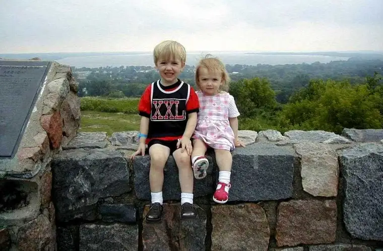
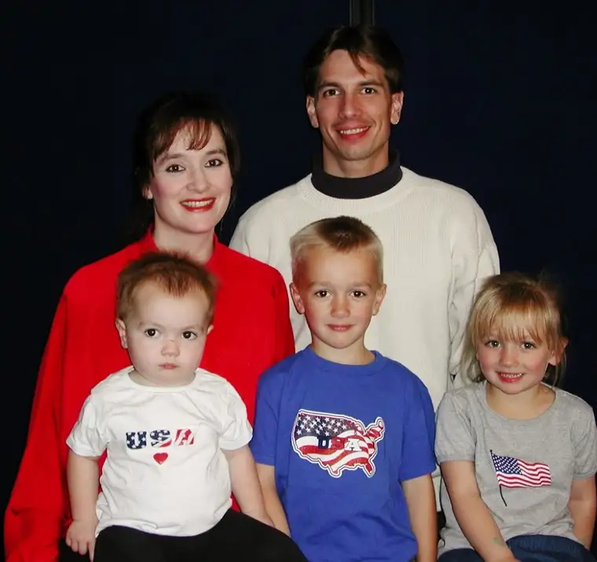
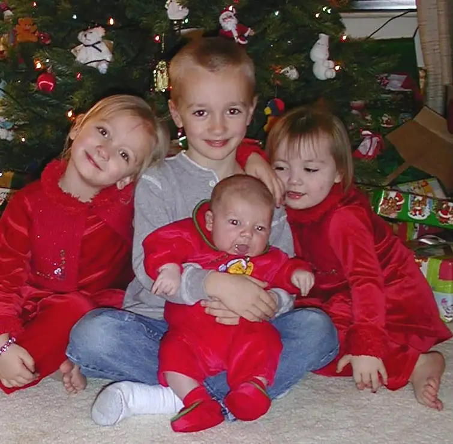
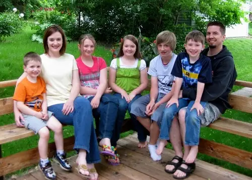

This week, the Catholic world celebrates — or admonishes in some circles — the encyclical Humanae Vitae, on “human life,” a document issued by Pope Paul VI in July 1968. So much is being said on it right now, in fact, that one more voice might seem unnecessary.
But despite opinions on the encyclical being as numerous as those who either disprove or embrace it, perhaps the ordinary people in the pews can best speak to the truth, beauty and goodness of this contentious-to-some document. Undoubtedly, this declaration, which affirmed the Church’s teaching against artificial contraception, changed my life — and for the better.
At Mass at Sts. Anne and Joachim Church in Fargo this weekend, the Reverend Kyle Metzger noted in his homily focusing on the document that “Beauty speaks. Beauty needs no justification.”
I agree. When it comes to sharing the beauty of Humanae Vitae, few words are necessary. This is the way the beauty of it played out in my life, in a few simple visuals.







Our family happens to be every bit as messy as most of humanity. But in taking a step back, I am reminded that each of these individuals has brought exponential worth, variety and blessing to our family, along with a need for abundant sacrifice, to give more than we could have anticipated at journey’s beginning.
When Pope Paul VI affirmed this teaching, further dividing the culturally-influenced Church, the outcry didn’t indicate how out of touch our pope and Church were, but offered evidence that God’s Truth does not always coincide with the world’s.
In 1968, the year of my own birth, society, especially American society, was busy “throwing off the shackles of oppression” in the form of the Sexual Revolution, and many saw life without contraception as one of those shackles that needed tossing. Assuming complete control of our sexual and reproductive lives made conquering the world seem more possible than ever.
But as the saying goes, be careful what you wish for. We’ve paid the price for the “freedoms” that were promised by ditching the supposed constraints on our sexual integrity. We wanted it all, and we got it, then some. It came with an explosion of sexually transmitted disease, abortion on demand, alarming rises in suicide and mental illness, rampant addiction to alcohol, drugs, porn and other life-hampering vices, as well as confusion over our very identity, and the growing degradation of marriage and the family. These ills had been predicted by Pope Paul VI; he forecast it all based on his knowledge of natural law and human nature. And now, in our “advanced” and “enlightened” era, we are in more bondage than ever; both secular and sacred spheres agree.
Though I’d been influenced by it from the beginning of our child-rearing years, Humanae Vitae finally came before me in between our second and third child, when many near us were questioning whether we should be open to more children (not that it was their business, but plenty offered us advice on the matter). I found the teaching mind-blowing and beautiful. And I knew that we were now being given a choice. We could either accept or reject this teaching. If we’d chosen to reject it, we’d likely have only two children. It’s even possible we’d have only one child; maybe even none.
In embracing Humanae Vitae, we began to reorder our lives. Goals changed and perspectives shifted. As we embraced the Church’s teaching and rejected the world’s, despite how many around us questioned our sanity, true freedom came within view. The peace that can come only through surrendering to God in the fullest sense possible became accessible.
As this teaching claimed our hearts, all of the Church’s teachings became easier to absorb and live out. This one teaching had the powerful effect of drawing us more fully into the others, and looking at everything anew.
I wouldn’t say it’s been easy. Not having any children would have been the easier route. Having one or two, while not easy, would have been easier. But I can say there are no regrets in this area of our lives. I am eternally grateful for not being wise of the world, but instead giving a nod to the wisdom of God, who beckons the little children to come to him. The Father really does know best, and I am so thankful for the Church Jesus left us so that we would not have to rely on the world’s skewed vision.
Saying “yes” to life challenges, but it also prods us to take leave of our own will and trust in God’s divine plan, in this and all other areas of life.
Marital love “is a love which is total — that very special form of personal friendship in which husband and wife generously share everything,” Humanae Vitae states, “allowing no unreasonable exceptions and not thinking solely of their own convenience. Whoever really loves his partner loves not only for what he receives, but loves that partner for the partner’s own sake, content to be able to enrich the other with the gift of himself.”
Beauty truly needs no defense. And when one notices it, one cannot help but draw close. We only have to open our eyes to see.
Humanae Vitae not only helped make us more open to having a larger family, but to be more open to people in general — to seeing each human being as a gift with untold potential, and trying diligently to live in a way that reflects that belief.
The pontiff who brought us this document will be declared a saint this coming October; to me, this speaks volumes. The Church, far from being behind the times, brings more prophetic wisdom than the world, and we would be wise to follow Her rather than the world, which fumbles and stumbles behind, slowly and agonizingly learning lessons the hard way.
Indeed, there’s a better way. It is God’s gift to us; His Church in all its bounteous blessing.
Q4U: What does “openness to life” mean to you? In what ways has following Church teaching redirected your life’s course?